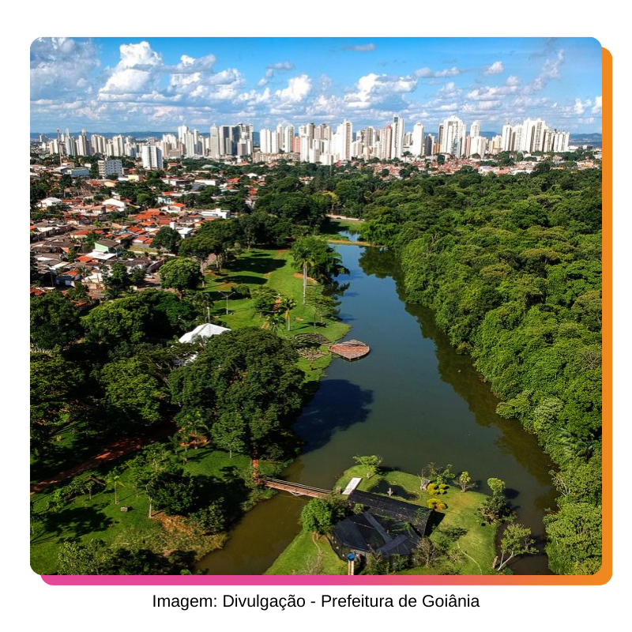
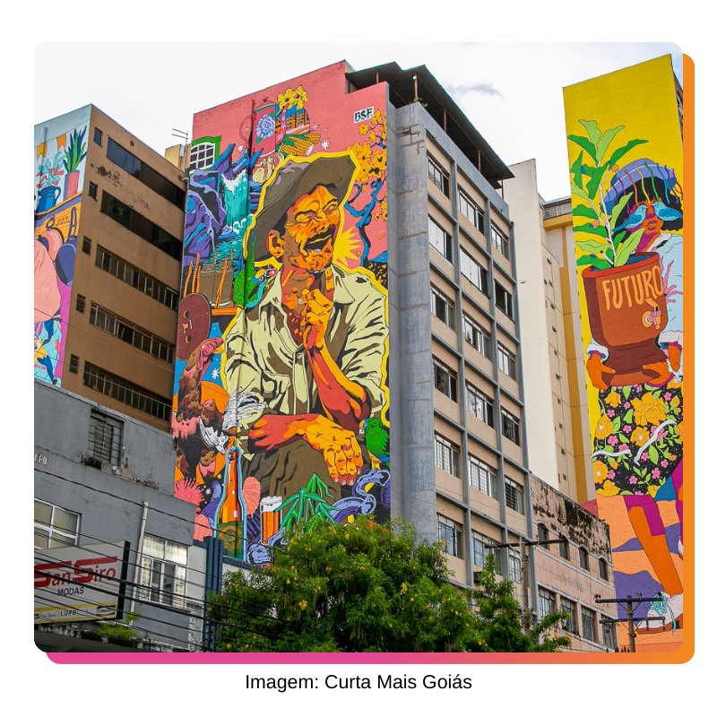

Centro de Goiânia
O Centro de Goiânia precisa de um debate sério, que envolva as pessoas que moram e trabalham na região, ou mesmo passam por aqui todos os dias. Veja como vou mudar e melhorar a vida no centro, abordando os reais problemas da região:
Destinação de recursos - 10% das emendas impositivas - para programas e ações voltadas à população em situação de rua, diminuindo o impacto; no dia a dia de quem mora, trabalha ou empreende no Setor Central, ao mesmo tempo que oferecer condições dignas a essas pessoas.
Trazer unidade de atendimento da Prefeitura de Goiânia para o Mercado Municipal da Rua 3.
Pautar o debate sobre a aplicação do IPTU progressivo para os imóveis fechados, que servem apenas para a especulação imobiliária.
Articulação com Poder Judiciário, Executivo, e outras instituições, para trazer uma solução para os imóveis em espólio.
Buscar iniciativas de valorização das tradições do Centro e da Art Déco.
Saúde mental e inclusão social
Enfrentei os desafios de ser uma criança com transtorno de déficit de atenção (TDHA) em escolas pouco inclusivas. Quero fazer dessa experiência um motor de transformação para uma educação mais inclusiva.
Cobrar e acompanhar melhorias de infraestrutura dos CAPS de Goiânia.
Pautar a inclusão de pessoas do TDHA e com autismo no ensino municipal.
Exigir o aumento do quadro de profissionais de psiquiatria e psicologia nas unidades de saúde.
Apoio para políticas públicas voltadas ao diagnóstico precoce de TDAH, autismo e outros.
Mulher + esporte feminino
Nós somos a maioria da população, quem traz o maior número de medalhas em competições internacionais, e ainda estamos aquém quando se trata de representação e fortalecimento de políticas para mulheres. Vamos lutar para colocar a mulher e o esporte feminino no orçamento.
Criar o programa “MulherArte” com o objetivo de inserir as mulheres, em especial às vítimas de violência, no mercado de arte, cultura e artesanto.
Destinar recursos, por meio de emendas impositivas, à programas e ações voltadas ao esporte feminino.
Composição do gabinete formada por 60% de mulheres.
Destinar recursos, por meio de emendas impositivas, ao programa “Mulher Mais Segura”, da Guarda Municipal de Goiânia.

Meio ambiente, sustentabilidade e cuidado animal
Os efeitos do aquecimento global chegaram ao Brasil e castigam diversas cidades. Goiânia também tem sofrido as consequências e precisa ter um plano de atuação com objetivo de diminuir o impacto na população, agora e no futuro. Unindo desenvolvimento com sustentabilidade.
Criar programa de incentivo a agricultura familiar, periurbana e entorno, além de destinar recursos, por meio de 10% das emendas impositivas a ações.
Criar o “COOPERAR em Goiânia”, um programa de incentivo ao cooperativismo, com foco nas iniciativas de reciclagem e reuso de materiais.
Pautar o debate sobre a criação do IPTU verde em Goiânia.
Criar o banco de adoção animal de Goiânia, para incentivo e apoio aos abrigos, também formatação de parceria para capacitação dos gestores de associações de amparo.
Propor a Lei “Aqui Nasce um Rio”, que coloca metas de recuperação de nascentes e sistemas de acompanhamento.
Defender a aprovação da Lei Ambiental de Goiânia e criar a Frente Parlamentar em Defesa do Meio Ambiente.
Propor obrigatoriedade de sabatina para os indicados à presidência da Agência Ambiental, garantindo a certificação técnica dos ocupantes do cargo.
Cidade e qualidade de vida
Os goianienses precisam estar no centro do debate público. Prefeitura e Câmara de Vereadores precisam pensar na qualidade de vida da população e na eficiência da cidade.
Garantir que as praças de todos os bairros tenham equipamento de práticas esportivas, como academia ao ar livre, quadras esportivas, dentre outras.
Criar o programa “Adote uma Quadra”, que permite a parceria do município com empresas privadas para manutenção das praças públicas.
Fiscalizar efetivamente a zeladoria do município, reduzindo problemas com falta de iluminação, lixo e asfalto ruim.
Apresentar proposta de soluções de trânsito e mobilidade para garantir estacionamento aos feirantes, em dia de feira.
Exigir e acompanhar que os recursos do fundo voltado ao emprego sejam usados para ações voltadas à formação e inserção da juventude no mercado de trabalho.
Fomentar os e-sports em Goiânia.

Cultura e Arte
O trabalhador de cultura precisa ser levado a sério. Ter seus pagamentos quitados. Cultura precisa ser tratada com profissionalismo e responsabilidade.
Exigir o pagamento dos profissionais de cultura e arte contratados pela SECULT Goiânia, com salários atrasados, com juros e correção monetária.
Investigar as razões e responsáveis pelos constantes atrasos de pagamentos dos profissionais.
Fomentar o mercado de arte e cultura em Goiânia.
Pautar o ensino cultural nas escolas.